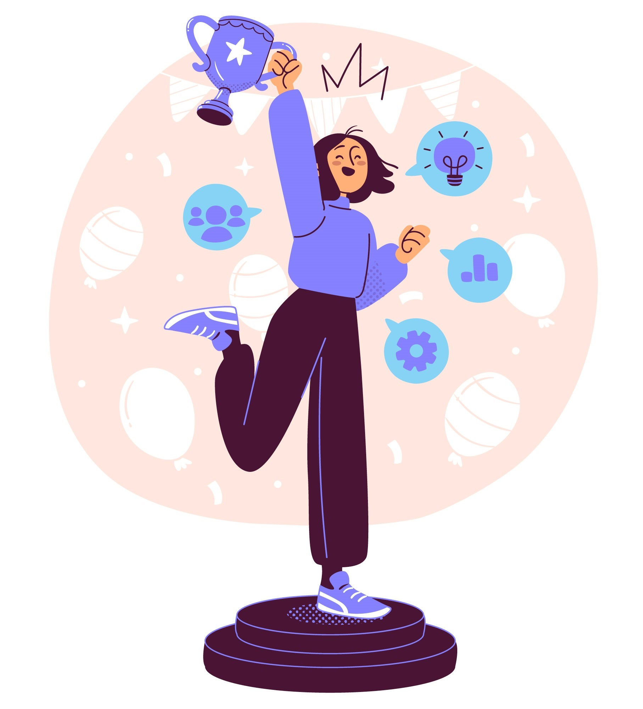
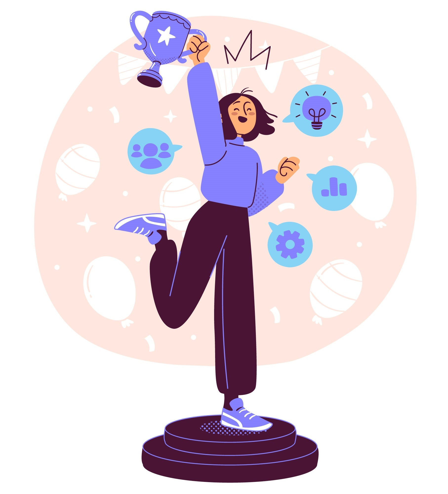

THE FIRST STEP TO THE DIGITAL UNIVERSE!
Welcome!
This website marks the beginning of an extraordinary adventure in the world of programming and web development. Every page, every line of code represents a step forward in transforming a dream into reality. What started as curiosity has turned into a deep passion for everything related to technology, creativity, and innovation.
The first steps in this journey were built on fundamental elements: HTML and CSS. These simple yet incredibly powerful tools have allowed me to create structures, add color, and bring my ideas to life. But this is just the first stage. Ahead lies a path filled with challenges, continuous learning, and exciting projects that will reflect my progress.
This site is not just a collection of pages but also a journal of my progress, a reflection of my efforts and ambitions. I invite you to explore and stay tuned to discover the projects taking shape, the valuable lessons I am learning, and the inspiration that keeps me moving forward.
Every step brings me closer to a future full of possibilities. And this beginning promises to be just the foundation of a success story.
 

My vision is to create innovative solutions that enhance user experiences and bring real value to the online community. Every project I will develop will reflect my dedication to excellence and my desire to contribute to the digital evolution of the world.